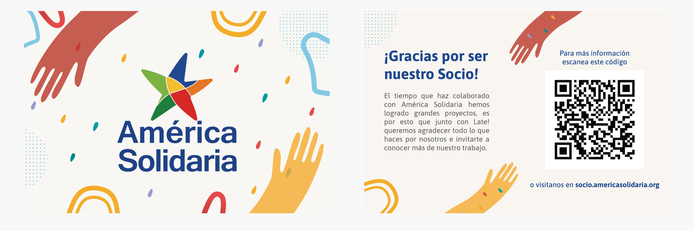

El Cliente
América Solidaria es una Organización que trabaja hace 17 años por la superación de la pobreza y vulneración infantil en el continente. Este trabajo se lleva a cabo gracias al aporte de sus socios y a la colaboración de profesionales voluntarios que dedican un año a trabajar en otro paín de la región.
El desafío
Construir un modelo de fidelización de socios vinculantes con el territorio y la causa y realizar un levantamiento de las principales motivaciones, necesidades y oportunidades que los socios observan frente a su relación con la Fundación.
Mi Rol
Investigación, Arquitectura de la Información, Diseño Visual, Prototipado.
La Propuesta
Teniendo en cuenta las necesidades detectadas durante el procceso de investigación, la propuesta estuvo enfocada, por un lado, en encontrar los canales de comunicación más eficientes para que la información relevante entregada por la Fundación llegue a los socios y se puedan dar instancias de retroalimentación entre ambos. Por otro lado, generar una conexión emocional con los socios para que sientan la importancia de sus donaciones y el beneficio que significan para las comunidades a las que ayudan.
Estrategia de Fidelización
Se propuso lanzar una campaña de agradecimiento a los socios y así reforzar la idea de que son el pilar
más importante en el financiamiento de los proyectos.
Para poder llevarla a cabo, se sugirió que puedan participar las empresas con las que tienen alianzas para que
puedan apoyar a la Fundación con los gastos que implica este lanzamiento.
La campaña consta del envío de una polera o bolsa reutilizable a cada uno de los socios, impresa con la gráfica
creada para este fín. De esta forma, se pueden incluir a todos los socios que vivan fuera de Santiago.
Con esto se busca, también, que el socio propueva por sí mismo la causa, a través del uso de estos productos.

Acompañado de este presente se enviaría una tarjeta impresa con un mensaje dedicado al socio y un códido QR que al ser escaneado abrirá una ventana con un landing page exclusivo para socios.
Para el Landing Page se pensó en una página de carácter informativo, que contendrá información relevante para el socio; como proyectos, alianzas, transparencia y una invitación a participar activamente de las redes sociales.
Mensaje inicial
Comenzará con un mensaje de bienvenida que reforzará los objetivos de comunicación y conexión emocional, agradeciendo abiertamente a los socios por ser parte de la Fundación e invitarlos a conocer la información del uso de los fondos.
Proyectos
Esta sección será principalmente visual, con fotos de los proyectos y descripciones que sean rápidas de leer y atractivas para que los socios tengan la intención de seguir explorando los proyectos en la página.
Alianzas
Permite visualizar la información a través de un scroll horizontal que contendrá los logotipos de los aliados en escala de grises para no interferir en la paleta de colores del landing page y no saturar de información la sección. Sin embargo, al posicionar el mouse sobre cada logo, descubrirán los colores de cada marca.
Transparencia
Se muestra la información de financiamiento de una forma más jerarquizada, más clara y visualmente agradable para los lectores. Dentro de cada tarjeta aparece el nombre de la sección, luego un gráfico circular con el porcentaje expresado en números y una pequeña contextualización de cada área.
Redes Sociales
En la sección final, se agradece que los socios se hayan informado y se los invita a ser parte de las redes sociales para participar activamente, comentando y aportando con feedbacks constantes.
Estrategia de Redes Sociales
Considerando que las redes sociales son un punto clave para brindar y obtener información, se quiso aprovechar este medio
para poder acercar a América Solidaria con sus seguidores.
Para esta propuesta se realizó una investigación sobre Marketing Digital dirigidas específicamente a Facebook e Instagram ya que hay
reportes que muestran que son los principales medios donde jóvenes y adultos buscan informarse e interactúan con contenido que
son de su interés.
Los objetivos planteados fueron:
- Generar conocimiento sobre la Fundación. Qué es y qué hace.
- Visibilizar a las empresas con las que tienen alianzas.
- Incentivar la interacción con sus seguidores a través de publicaciones para obtener retroalimentación.
- Mantener informados a sus seguidores sobre las actividades que realizan y los proyectos en los que trabajan.

Facebook
Para mantener una presencia activa pero a la vez no saturar con información, recomendamos realizar tres publicaciones semanales donde cada una mantenga una línea de contenido específico:
- La primera, sobre la campaña de captación en curso.
- La segunda, sobre información de actualidad referente a niños.
- La tercera, sobre socios, experiencia de voluntarios, alianzas, publicaciones que inviten a sus seguidores a dar su opinión.
Instagram
- Se recomendó incorporar más videos ya son las publicaciones en las que reciben mayor interacción.
- Aprovechar las historias para acercarse más a sus seguidores, ya que muchos de ellos son socios o bien socios potenciales.
Proceso de Diseño
Entendiendo el contexto
Mapa de Contexto
Para lograr entender el entorno que rodea al trabajo que realiza América Solidaria, realicé un mapa de contexto que muestra como intereactúan entre lo social, tecnológino y económico.
Service Blueprint
Utilicé esta herramienta con el fin de entender las relaciones entre los distintos componentes del servicio, cómo las personas interactúan, por cuáles medios, cómo es el flujo de la información y cuál es la evidencia de estas interacciones.
Entendiendo a los Usuarios
Realicé entrevistas con socios para saber la experiencia que tienen o tuvieron siendo parte de la Fundación. Las
entrevistas estuvieron enfocadas a Socios, Ex-Socios y Socios-Potenciales.
Los objetivos de las entrevistas apuntaron a la satisfacción de los socios con la Fundación, conocer es la comunicación entre ellos,
cuál es la principal motivación para asociarse y el nivel de compromiso que han establecido o pudieran establecer con ella.
Algunos de los puntos relevantes que se obtubieron durante las entrevistas fueron:
No abren los correos que reciben de la fundación por lo que no están al tanto de la información que envían.
Ninguno recuerda alguna acción o beneficio que la Fundación haya tenido con ellos.
Ninguno conoce los proyectos que América Solidaria financia con sus aportes.
Prefieren participar de instancias de voluntariados en lugar de acudir a eventos.